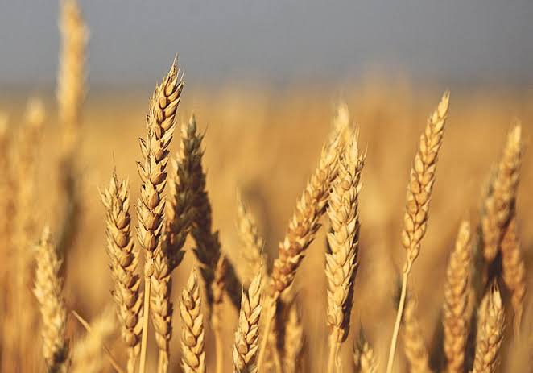

AGRICULTURE DEPARTMENT
AGRICULTURE DEPARTMENT

About Wheat:-
Wheat is the main cereal crop in India.
The total area under the crop is about 29.8 million hectares in the country. The production of wheat in the country has increased significantly from 75.n million MT in 2006-07 to an all time record high of 94.88 million MT in 2011-12. The productivity of wheat which was 2602 kg/hectare in 2004-05 has increased to 3140 kg/hectare in 2011-12. The major increase in the productivity of wheat has been observed in the states of Haryana, Punjab and Uttar Pradesh. Higher area coverage is reported from MP irecent years.